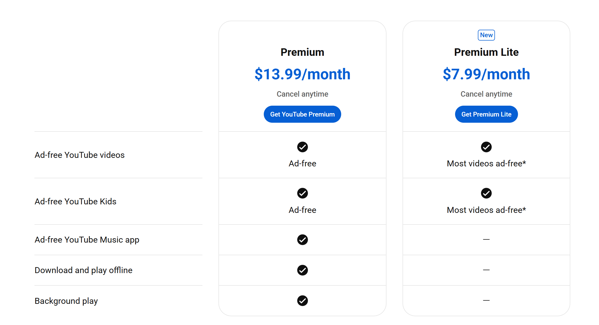
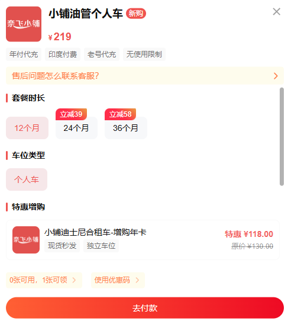
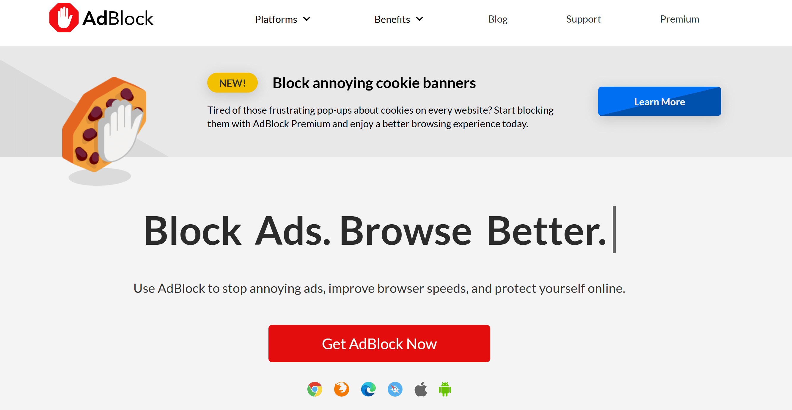
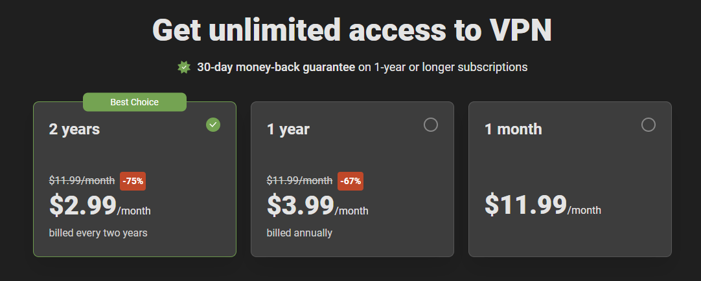
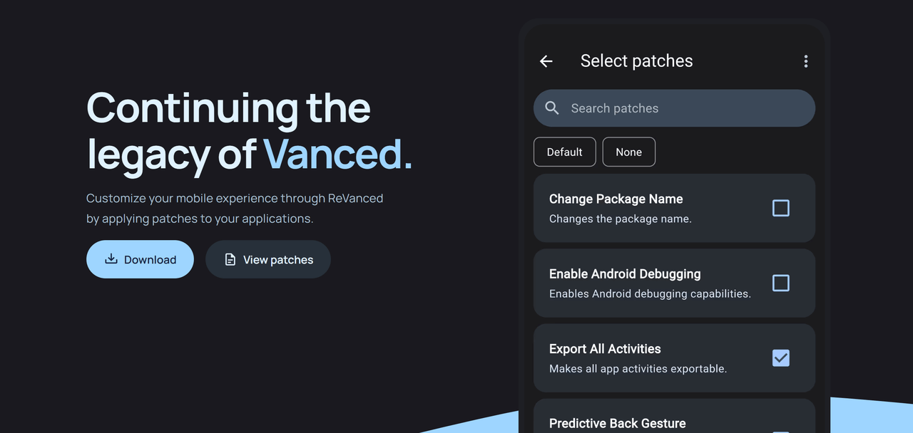
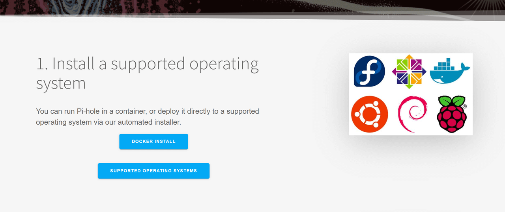

2025年屏蔽YouTube广告的6种合法有效方法

我从 2015 年开始使用 YouTube，它承载着我的许多美好回忆。然而，广告越来越频繁，严重影响了我的观看体验。为了解决这个问题，我尝试了各种屏蔽广告的方法，并整理了这篇文章。
接下来，我将分享六种我认为最有效的方法：从浏览器扩展程序、修改 YouTube 应用到订阅 YouTube Premium，甚至使用 VPN。希望这些方法能帮助你获得更流畅、无广告的观看体验。
2025 年 3 月 5 日，YouTube 推出了 Lite 功能，但仍有一些更实用、更合法的替代方案，让你可以更安心地享受没有广告的 YouTube。
使用 YouTube Premium 屏蔽 YouTube 广告
YouTube Premium 是官方无广告订阅服务，提供无广告观看、视频下载、后台播放、访问 YouTube Music Premium 和独家原创内容。
2025年，YouTube Premium的订阅费用为每月13.99美元，学生优惠价为每月7.99美元。新推出的YouTube Premium Lite售价为每月7.99美元。
毫无疑问，这是畅享 YouTube 且不被广告打扰的最便捷方式，但价格可能仍会让你犹豫。即使是更便宜的精简版，整体性价比也并不高。
它缺少后台播放、离线下载和音乐服务等基本功能，与完整的高级版本相比，体验明显较差。
更便宜的 YouTube Premium 升级方式
鉴于官方价格高昂，我开始寻找更实惠的订阅方案。尝试了几种方法后，我发现第三方账户共享平台是个不错的选择。它们比短期试用版更稳定，而且价格只是官方价格的一小部分。
例如，我一直在使用的 奈飞小铺 提供的 YouTube Premium账户 ，每月费用不到 20 元 —— 比官方的精简版便宜，但却提供了完整的Premium体验。久而久之，这为我节省了不少钱。
价格可能会随时间略有波动，但始终低于官方价格，让我在流媒体播放上节省了一大笔钱。使用两年来，我从未遇到过任何不稳定的情况，他们的客服也一直快速可靠。
使用 AdBlock 屏蔽 YouTube 广告
除了官方的高级服务外，使用广告拦截扩展程序也是屏蔽 YouTube 广告的另一个不错的选择。我个人使用 AdBlock，效果很好。
这些扩展程序在你的浏览器上运行，并自动过滤掉视频中的大部分广告，包括常见的前贴片广告、中贴片广告、后贴片广告，甚至主页推荐和侧边栏横幅。
对于喜欢在电脑上观看 YouTube 的用户来说，这是一种快速简便的删除广告的解决方案。
AdBlock 设置指南
除了 YouTube Premium 之外，AdBlock 是本文中最容易使用的方法之一。只需按照以下步骤即可快速屏蔽广告：
- 打开你喜欢的浏览器(例如 Chrome、Edge 或 Firefox)。
- 前往浏览器的扩展商店并搜索AdBlock。
- 点击"添加到浏览器"并完成安装。
- 安装后，刷新 YouTube 页面，广告将自动被屏蔽。
利弊分析
AdBlock 的优势在于免费且易于安装。它可以屏蔽几乎所有常见的 YouTube 广告，让观看体验更加流畅，减少中断。对于桌面用户来说，它是移除广告最直接有效的方法之一。
然而，它也存在一些缺点。它只能在浏览器上使用，对移动应用无效。此外，YouTube 会不断更新其反广告拦截机制，这可能会导致广告拦截器停止工作。这需要定期调整或使用不同的扩展程序。某些网站也可能因广告拦截器而出现加载问题，需要手动设置白名单。
提示：为什么我的广告没有被 AdBlock 拦截？
即使安装了 AdBlock，你仍然可能会在 YouTube 上看到广告。以下是一些原因：
- AdBlock 未启用： 如果仍然显示广告，请检查扩展程序是否已启用，并确保 YouTube 没有被错误地添加到白名单中。
- 使用隐身模式： 在大多数浏览器中，隐身或私人模式通常默认禁用扩展，因此你需要手动启用它。
- 过滤列表已过期： AdBlock 依赖于社区维护的过滤规则。如果规则未及时更新，某些新广告可能无法被拦截。通常，刷新页面或等待更新即可解决此问题。
总的来说，AdBlock 是一款功能强大且免费的广告拦截工具。虽然 YouTube 更新反广告拦截机制时，它偶尔会出现故障，但通常在过滤列表更新后就能快速恢复功能，因此仍然值得推荐。
使用 AdGuard 屏蔽 YouTube 广告
AdGuard 是另一款广告拦截应用，它不仅提供类似 AdBlock 的浏览器扩展程序，还提供桌面和移动应用程序。目前，AdGuard 支持 Windows、macOS、Android 和 iOS 系统，覆盖电脑和移动用户。与单纯依赖浏览器插件相比，AdGuard 客户端版本功能更强大，提供更广泛的广告拦截功能。
AdGuard 安装方法
由于 AdGuard 同时提供浏览器扩展以及桌面和移动应用程序，因此以下是如何在每个平台上安装它：
- 浏览器扩展：前往 Chrome、Firefox、Edge 或其他扩展商店，搜索"AdGuard"，然后将其添加到你的浏览器。
- 桌面应用程序：访问 AdGuard 官方网站，下载 Windows 或 macOS 版本，安装后即可在系统级别启用广告过滤。
- 移动应用程序：从 Android 或 iOS 应用商店下载 AdGuard 应用程序，安装后，它将阻止应用程序和网站上的广告。
通过这些安装方法，AdGuard 几乎覆盖了所有主流平台，让你无论使用电脑还是移动设备都能享受更清洁、无广告的浏览体验。
利弊分析
AdGuard 的优势在于其覆盖范围广。与主要拦截网页广告的 AdBlock 不同，AdGuard 还可以处理移动应用和桌面应用中的广告，非常适合拥有多台设备的用户，并提供更大的灵活性。
然而，与免费的 AdBlock 不同，AdGuard 的桌面和移动应用完整版需要付费订阅(可选择年度或终身许可证)，这意味着其成本更高。此外，由于 iOS 系统限制，需要进行额外配置，用户体验会略微复杂一些。
AdGuard 的订阅等级可能有点令人困惑。如果你感兴趣，可以访问AdGuard 官方网站了解详细的定价。
如果你觉得官方价格太高，你仍然可以选择一些共享平台，在那里你可以以低得多的价格获得AdGuard Premium 。
使用 ReVanced 屏蔽 YouTube 广告
使用经过修改的第三方 YouTube 应用来屏蔽广告是另一个值得考虑的选择。曾经很受欢迎的 YouTube Vanced 已经停止更新，但社区后来推出了 ReVanced 作为其继任者来继续维护。
ReVanced 基于官方 YouTube 客户端，功能几乎相同，但去除了广告，并增加了后台播放和视频下载等附加功能。对于 Android 用户来说，它是一个受欢迎的替代方案。
ReVanced 安装指南
与 AdBlock 和 AdGuard 的安装过程相比，ReVanced 稍微复杂一些，需要进行一些手动设置。安装方法如下：
- 前往ReVanced 官方社区或受信任的镜像站点下载必要的文件(包括 ReVanced Manager)。
- 在你的 Android 设备上，启用"允许从未知来源安装"。
- 使用 ReVanced Manager 修补原始 YouTube 应用并创建 ReVanced 版本。
- 安装后，使用你的 Google 帐户登录即可开始使用该应用程序。
ReVanced 提供了与 YouTube Premium 类似的完整体验，但其安装步骤更为复杂，因此更适合习惯进行一些调整的 Android 用户。
利弊分析
ReVanced 的优势在于它提供了与 YouTube Premium 非常相似的体验：无广告播放、后台播放、离线缓存、主题自定义等等，而且全部免费。对于 Android 用户来说，它本质上是 YouTube Premium 的"免费替代品"。
然而，由于 ReVanced 并非官方应用，因此存在安全性和稳定性风险。请务必从可信来源下载，以免受到恶意软件的侵害。此外，它主要支持 Android 系统，因此不适用于 iOS 设备。
使用 Pi-hole 屏蔽 YouTube 广告
Pi-hole 是一款完全开源且免费的广告拦截工具，其工作原理是通过本地 DNS 服务器在网络级别拦截广告域名。任何连接到同一网络的设备都可以从中受益。由于是开源的，它不仅免费使用，而且还支持自定义，让你可以根据自己的需求定制过滤规则。
然而，部署 Pi-hole 需要一些技术知识以及额外的硬件或服务器支持，因此是一个较为复杂的解决方案。它最适合具有强烈 DIY 意识并对网络技术感兴趣的用户。
Pi-hole安装指南
如果你对技术有深入的了解并对此方法感兴趣，可以访问Pi-hole 官方网站并按照他们提供的安装脚本进行操作。你需要修改路由器或设备上的 DNS 设置才能使用 Pi-hole 的地址。连接后，它将阻止整个网络中的大多数广告请求。
利弊分析
Pi-hole 的优势在于，一旦部署，它就能覆盖整个网络，非常适合希望家中所有设备都能享受广告拦截功能的用户。它不仅可以提升观看体验，还能增强隐私保护。
然而，在 YouTube 上，广告和视频通常共享同一个域名，因此屏蔽效果有限，无法保证完全无广告的体验。此外，与其他方法相比，安装和维护需要更高的技术技能、额外的硬件以及更高的成本和复杂性。
使用 VPN 屏蔽 YouTube 广告
屏蔽 YouTube 广告的另一种方法是使用 VPN。一些 VPN 提供商提供广告拦截功能，可以在数据到达你的设备之前过滤掉广告请求，同时加密你的流量。
与 Pi-hole 需要用户部署和维护网络级解决方案不同，VPN 广告拦截通常由服务提供商提供。用户只需订阅 VPN 并启用该功能，这使得它成为一个更简单且技术要求更低的选择。
VPN安装指南
- 选择包含广告拦截功能的 VPN 服务(例如，NordVPN)。
- 下载并安装相应的客户端应用程序(支持Windows，macOS，Android，iOS等)。
- 注册并购买订阅，然后登录你的帐户。
- 在设置中启用广告拦截功能。
- 一旦连接到任何服务器，你就可以享受广告过滤和匿名浏览。
优点和缺点
VPN 广告拦截主要针对常规网络广告，只能减少 YouTube 上的某些横幅广告或外部推广广告。其对视频内嵌广告的效果有限。
此外，优质的VPN服务通常需要付费订阅，长期使用成本相对较高，相比专业的广告拦截工具，性价比并不算高。
2025年最有效的YouTube广告拦截方法
我们探索了各种屏蔽 YouTube 广告的方法，每种方法都有其优缺点。为了帮助你选择最有效的方案，我们创建了下表：
| 方法 | 每月费用(大约) | 推荐评级 |
|---|---|---|
| 订阅 YouTube Premium | 13.99 美元/月(精简版 7.99 美元/月) | ⭐⭐⭐⭐ |
| 通过 奈飞小铺 订阅 YouTube Premium | 每月约 4 美元 | ⭐⭐⭐⭐⭐ |
| 使用 AdBlock | 自由的 | ⭐⭐⭐⭐ |
| 使用 AdGuard | 2.49 美元/月(个人，3 台设备) / 5.49 美元/月(家庭，9 台设备) | ⭐⭐⭐ |
| 使用 ReVanced | 免费(仅限安卓系统) | ⭐⭐⭐ |
| 使用 Pi-hole | 硬件+电力，约2-5美元/月 | ⭐⭐ |
| 使用 VPN | 高品质VPN 每月8-12美元 | ⭐⭐ |
结论
观看 YouTube 视频时，有几种方法可以避免广告 - AdBlock、ReVanced 和 AdGuard 等工具可以阻止几乎所有类型的广告，而 VPN 则有助于过滤展示广告。
不过，如果你追求最佳的整体体验，YouTube Premium 仍然是你的首选。通过共享平台购买，你可以以更实惠的价格享受所有服务。
常问问题
如何禁用 YouTube 上的个性化广告？
你可以通过 Google 帐户设置关闭个性化广告。只需访问 Google 广告个性化页面并关闭"广告个性化"选项即可。但是，这并不能完全屏蔽所有广告。为了获得完全无广告的体验，你可以考虑订阅 YouTube Premium 或使用浏览器扩展程序和广告拦截应用。
如何在 Mac 上删除 YouTube 广告？
在 macOS 上，你可以通过在 Safari 设置中启用 AdBlock Pro 或类似的视频广告拦截扩展程序来屏蔽 YouTube 广告。如果你使用的是 iOS/iPadOS 15 或更高版本，你也可以在启用广告拦截功能的情况下通过 Safari 访问 YouTube。对于 iOS/iPadOS 14 及更早版本，可能需要独立的广告拦截应用。
亚马逊音乐比 Spotify 好吗？
想要在 YouTube 上观看无广告内容，最直接的方法是订阅 YouTube Premium，它可以在 YouTube 和 YouTube Kids 上提供无广告的体验。或者，你也可以使用一些免费的方法，例如广告拦截器、VPN 或 YouTube ReVanced 和 NewPipe 等经过修改的应用程序，但这些方法可能存在一定的限制和风险。